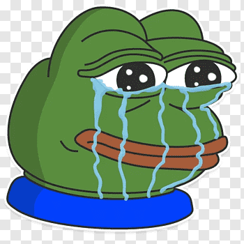
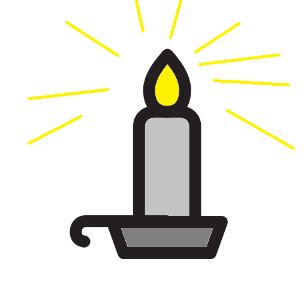

Żaba 1 - baseline
Żaba 1 - baselinekonstrukcje gramatyczne służące wyrażaniu teraźniejszości w angielskim systemie gramatycznym
Teraźniejszość w angielszczyźne opisywana jest inaczej niż w większości języków indoeuropejskich, nie wyłączając germańskich
 Rammstein – niemieckiego zespołu metalowego składa się z siedmiu al bumów studyjnych, dwóch albumów koncertowych, jednej kompilacji, jednego box s etu, dwudziestu czterech singli oraz czterech wideo. Członkami zespołu od jego założenia w 1993 są: wokalista Till Lindemann, gitarzyści Richard Kruspe i Paul Landers, keyboardzista Christian Lorenz, basista Oliver Riedel oraz p erkusista Christoph Schneider[1]. Zespół od początku kariery sprzedał na ś wiecie ponad 45 milionów płyt.
Short Justify :)
Alioram – wymarły rodzaj dinozaura, teropoda z rodziny tyranozaurów żyjąceg w późnej kredzie na terenach Azji. Gatunek typowy, A. remotus, jest znany z niekompletnej czaszki i trzech kości śródstopia wydobytych z datowanych na mastrycht osadów równiny zalewowej na terenie Mongolii. Skamieniałości t e opisał i nazwał rosyjski paleontolog Siergiej Kurzanow w 1976 roku. Po krewieństwo aliorama z innymi tyranozaurami pozostawało niepewne – niekt órzy paleontolodzy twierdzili, że może być on blisko spokrewniony ze wsp ółczesnym mu tarbozaurem
lub reprezentować młode tego rodzaju, obecnie wraz z Qianzhousaurus zalicza s, a jego ostre zęby dowodzą, że żywił się m ięsem. Był mniejszy niż Tarbosaurus i tyranozaur, lecz dokładne oszacowanie ego rozmiarów jest utrudnione, gdyż znane skamieniałości należą prawdopodob nie do osobników młodocianych. Cecha charakterystyczna aliorama to długa i niska czaszka z kilkoma kostnymi ię g o do plemienia Alioramini. Podobnie jak większość teropodów, Alioramus poruszał się na dwóch kończynachgrzebie niami na czubku pyska. Alioram miał też więcej zębów niż pozostałe tyranozaury Żaba 1 - baseline
Zaba 2 - sub
zaba 3 - super
zaba 4 - top
zaba 5 - text-top
zaba 6 - middle
zaba 7 - bottom
zaba 8 - text-bottom
zaba 9 - auto
GÓRA
 SWIECA
DÓŁ